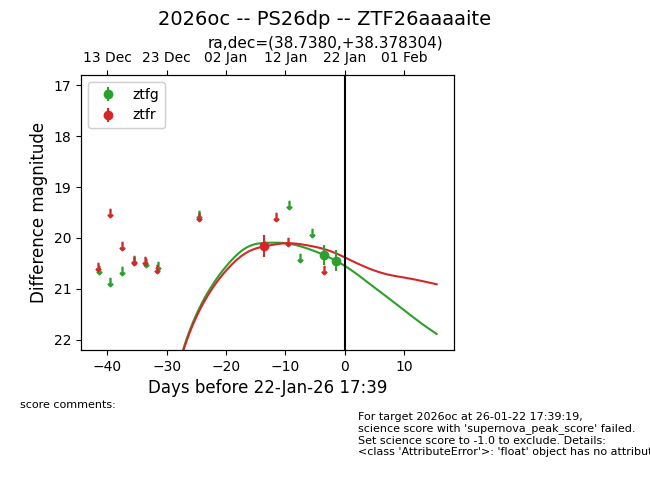
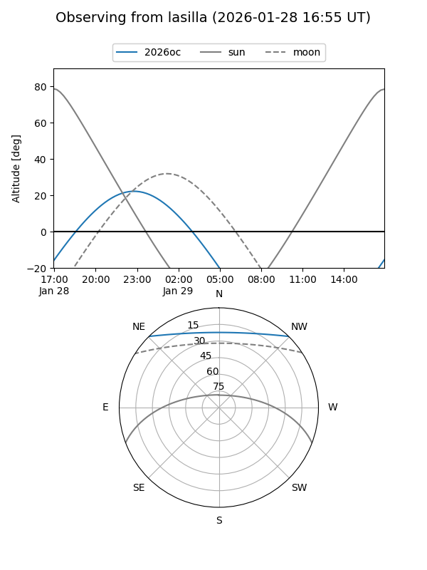
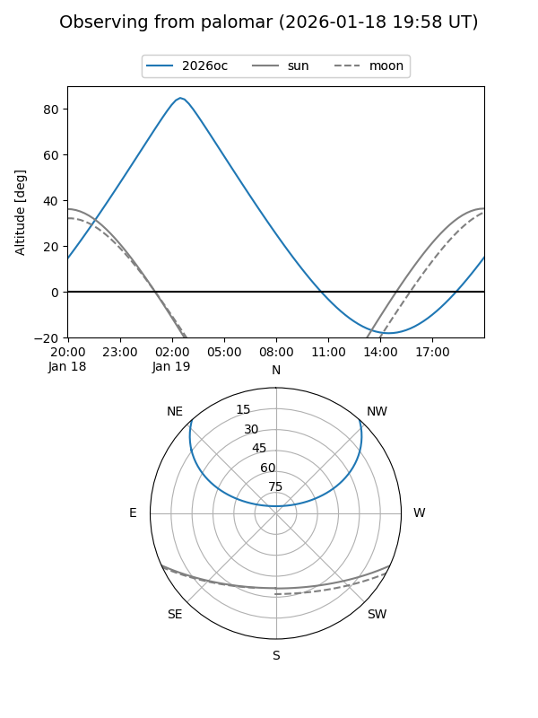
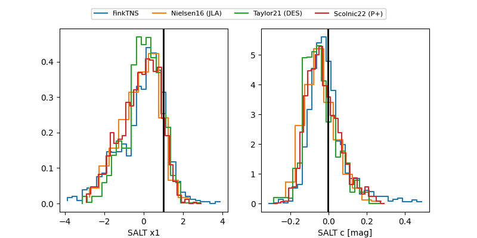

2026oc
Target 2026oc at 2026-01-21 19:56
Aliases and brokers:
FINK: link
Lasair: link
ALeRCE: link
TNS: link
YSE: link
alt names
ZTF26aaaaite (ztf,fink_ztf)
2026oc (tns,yse)
PS26dp (panstarrs)
Coordinates:
equatorial (ra, dec) = 38.7380,+38.37830
equatorial (HMS+DMS) = 02:34:57.12,+38:22:41.89
galactic (l, b) = (144.3078,-20.15898)
Flags:
Photometry:
last ztfg=20.45, ztfr=20.17
2 ztfg, 1 ztfr detections
Lightcurve

Visibility


Additional plots
